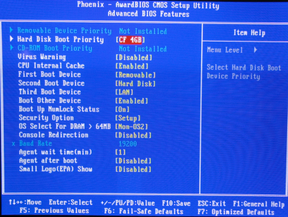

The following document describes the steps to install software on an OpenRemote RI hardware. The steps described include creating a bootable USB flash drive and installing Voyage Linux and installing OpenRemote Controller software and required support software packages.
Create Bootable Flash Drive
The required hardware and software includes:
- OpenRemote Reference Implementation - Hardware Bill of Materials
- USB stick or CompactFlash card (1Gb or more)
- UNetbootin (Universal Netboot Installer). These instructions have been verified against UNetbootin release 299. UNetbootin is available on Windows and Linux. Mac is currently not supported.
- Voyage Linux Live CD. These instructions have been verified against Voyage Linux version 0.5.2.
Download Voyage Linux Live CD ISO on your computer.
Download UNetbootin on your computer. The examples below are based on the Windows version of UNetbootin.
Install and start UNetbootin. Select install from ISO image and enter the path to the downloaded Voyage Linux Live CD ISO image (see image below).
Choose the target drive for installation and click 'OK'.
UNetbootin will install the ISO image to the USB flash drive.
Boot OpenRemote RI From External Flash Drive
Connect the USB flash to your OpenRemote RI hardware. Reboot or power on the device.
As the BIOS boots up, hit 'Delete' key to enter setup. Choose 'Advanced BIOS Features' (see image below) to change the boot order to start with your USB flash drive.
Next, choose the 'Hard Disk Boot Priority' (see image below). This is likely to show your internal CompactFlash at this point.

Finally, change the boot order to your external USB flash drive by using the 'Page Up' and 'Page Down' keys (TDK USB stick in the image shown below). Note that the external USB flash drive must be connected to the OpenRemote RI box in order to select it from the BIOS settings. Save the BIOS settings by hitting the 'F10' key.
You should now see Voyage Linux Live CD boot up from your external USB flash drive. Wait until the boot sequence reaches the login prompt. Then enter 'root' as the username and 'voyage' as the password.
Install Voyage Linux on OpenRemote RI CompactFlash Card
The following instructions can also be found on the 'README.live-cd' file on the root directory of the Voyage Live CD after boot and login.
Login
login: root password: voyage
Create Distribution Directory For Installation
# mkdir /tmp/root # mount -o loop /live_media/casper/filesystem.squashfs /tmp/root # cd /tmp/root
Make A Mount Point For Installation Disk
# mkdir /tmp/cf
Format Target Disk Device
The next step will erase all existing data on the CompactFlash! |
# /usr/local/sbin/format-cf.sh /dev/hda
The 'format-cf.sh' script will create /dev/hda1 ext2 partition on /dev/hda disk device.
Start voyage.update Installation Script
# /usr/local/sbin/voyage.update
What would you like to do?
1 - Create new Voyage Linux disk
2 - Update existing Voyage configuration
3 - Exit
(default=1 [Create new Voyage Linux disk]):
Choose 1: Create new Voyage Linux disk (hit 'Enter' for default).
Where is the Voyage Linux distribution directory? (default=/tmp/root):
Hit 'Enter' for default (we mounted the distribution to /tmp/root in the earlier steps).
What would you like to do?
1 - Specify Distribution Directory
2 - Select Target Profile
3 - Select Target Disk
4 - Select Target Bootstrap Loader
5 - Configure Target Console
6 - Copy Distribution to Target
7 - Exit
(default=2 [Select Target Profile]):
Choose 2 (hit 'Enter' for default).
Please select Voyage profile:
1 - 4501
2 - 4511/4521
3 - 4801
4 - 5501
5 - ALIX
6 - Generic PC
7 - Notebook (pcmcia)
8 - WRAP
(default=8 [WRAP]):
Choose 5 - ALIX.
What would you like to do?
1 - Specify Distribution Directory
2 - Select Target Profile
3 - Select Target Disk
4 - Select Target Bootstrap Loader
5 - Configure Target Console
6 - Copy Distribution to Target
7 - Exit
(default=3 [Select Target Disk]):
Choose 3 (hit 'Enter' for default).
Partitions information major minor #blocks name 3 0 3915576 hda 3 1 3911796 hda1 8 0 1945600 sda 8 1 1941568 sda1 7 0 28228 loop0 7 1 28228 loop1 Which device accesses the target disk [/dev/hde]?
Enter '/dev/hda1'.
Which partition should I use on /dev/hda for the Voyage system [1]?
Choose '1' (hit 'Enter' for default)
Device information for /dev/hda1
Type = ext2
Label = ROOT_FS
UUID = 8f293771-58e6-4080-b679-629a2766463c
Where can I mount the target disk [/tmp/cf]?
Type '/tmp/cf' or hit enter for default (we created '/tmp/cf' in earlier steps).
What would you like to do?
1 - Specify Distribution Directory
2 - Select Target Profile
3 - Select Target Disk
4 - Select Target Bootstrap Loader
5 - Configure Target Console
6 - Copy Distribution to Target
7 - Exit
(default=4 [Select Target Bootstrap Loader]):
Choose 4 (hit 'Enter' for default).
Which loader do you want (grub or lilo) [grub]?
Type 'grub' (hit enter for default).
Which partition is used for bootstrap [1]?
Choose 1 (hit 'Enter' for default).
What would you like to do?
1 - Specify Distribution Directory
2 - Select Target Profile
3 - Select Target Disk
4 - Select Target Bootstrap Loader
5 - Configure Target Console
6 - Copy Distribution to Target
7 - Exit
(default=5 [Configure Target Console]):
Choose 5 (hit 'Enter' for default).
Select terminal type:
1 - Serial Terminal
2 - Console Interface
(default=1 [Serial Terminal]):
Select 2. The 3D3 board comes with a VGA output so you can use the full console interface.
What would you like to do?
1 - Specify Distribution Directory
2 - Select Target Profile
3 - Select Target Disk
4 - Select Target Bootstrap Loader
5 - Configure Target Console
6 - Copy Distribution to Target
7 - Exit
(default=6 [Copy Distribution to Target]):
Choose 6 (hit 'Enter' for default).
Configuration details: ---------------------- Distribution directory: /tmp/root Disk/Flash Device: /dev/hda Installation Partition: /dev/hda1 Bootstrap Partition: /dev/hda1 Will be mounted on: /tmp/cf Target system profile: ALIX Target console: standard Bootstrap installer: grub Bootstrap partition: /dev/hda1 OK to continue (y/n)?
Answer yes. The installation script will copy the files to CF card.
What would you like to do?
1 - Specify Distribution Directory
2 - Select Target Profile
3 - Select Target Disk
4 - Select Target Bootstrap Loader
5 - Configure Target Console
6 - Copy Distribution to Target
7 - Exit
(default=7 [Exit]):
Choose 7 (hit 'Enter' for default). Reboot your OpenRemote RI box. Remove the external USB flash drive.
Prepare Voyage Installation for OpenRemote Controller Software
After rebooting your OpenRemote RI box, log back into the system.
login: root password: voyage
The default install mounts the file-system in read-only mode to avoid wearing down the flash with writes. In order to make changes on the CF card, you need first to remount the file-system in read-write mode.
# remountrw
Now you are able to perform normal persistent operations, like changing your root password (recommended!)
# passwd
Internet Connection for Software Setup
The next few steps set up the OpenRemote RI hardware with an Internet connection to ease the software installation. The idea is to set up the OpenRemote RI as a client to an existing Internet connection, not to set it up as a router or access point to other Internet enabled devices (such as an iPhone). The instructions to set up the OpenRemote RI as a proper wireless access point will follow later.
Internet Connection via LAN
The default install has been configured with DHCP for the LAN port (eth0) which should work as normal. Plug-in your ethernet cable, you should receive an IP address and you can access the Internet.
If this doesn't seem to work, if you need some extra configuration, let us know in the comments section or in the forums.
Internet Connection via WiFi
The default Voyage Linux install comes with MadWifi (Multiband Atheros Driver for Wireless Fidelity) packages. The Winstron DCMA81 MiniPCI wireless card is based on the Atheros chipset.
If you already have an Internet connection set up via LAN, and don't care about WiFi connection at this point, feel free to skip the following steps until the Install OpenRemote Controller Software section.
The WiFi connection information here is based on the following assumptions:
- Available wireless access point supporting 802.11g
- Network with DHCP server
- Open or shared key WEP security
Note that this section only covers setting up OpenRemote RI as a WLAN client connecting to an existing wireless access point. Steps required to set OpenRemote RI hardware as a wireless access point are covered later.
Set Up Wireless Network Interface
First, make sure you are logged in as 'root' user in your OpenRemote RI box.
Check the current wireless network interface status by executing 'iwconfig' command:
# iwconfig lo no wireless extensions. eth0 no wireless extensions. wifi0 no wireless extensions.
Network interface 'lo' stands for your local loopback interface (i.e. network packets sent to this interface are immediately looped back, never sent to the wire).
Network interface 'eth0' is the LAN card interface for wired connections.
Interface 'wifi0' is the base WLAN card (Winstron DCMA81 with Atheros chipset) on the OpenRemote RI box.
The MadWifi toolset will create virtual WLAN devices on top of the base 'wifi0' device. It's therefore possible to have multiple WLAN devices for a single physical WiFi card (some acting as clients, some as wireless access points). For now, we will settle with just one WLAN client device for software download purposes.
Create network interface 'orc0' by executing the following command:
# wlanconfig orc0 create wlandev wifi0 wlanmode sta
If you now execute 'iwconfig' again, you should see the new virtual WLAN device listed:
# iwconfig
lo no wireless extensions.
eth0 no wireless extensions.
wifi0 no wireless extensions.
orc0 IEEE 802.11b ESSID:"" Nickname:""
Mode:Managed Channel:0 Access Point: Not-Associated
Bit Rate:0 kb/s Tx-Power:0 dBm Sensitivity=1/1
Retry:off RTS thr:off Fragment thr:off
Encryption key:off
Power Management:off
Link Quality=0/70 Signal level=0 dBm Noise level=0 dBm
Rx invalid nwid:0 Rx invalid crypt:0 Rx invalid frag:0
Tx excessive retries:0 Invalid misc:0 Missed beacon:0
Now we need to bring up the actual physical network interface. Check the current active interfaces via 'ifconfig' command:
# ifconfig
eth0 Link encap:Ethernet HWaddr 00:0A:B7:15:CD:29
UP BROADCAST MULTICAST MTU:1500 Metric:1
RX packets:0 errors:0 dropped:0 overruns:0 frame:0
TX packets:0 errors:0 dropped:0 overruns:0 carrier:0
collisions:0 txqueuelen:1000
RX bytes:0 (0.0 b) TX bytes:0 (0.0b)
Interrupt:11
lo Link encap:Local Loopback
inet addr:127.0.0.1 Mask:255.0.0.0
inet6 addr: ::1/128 Scope:Host
UP LOOPBACK RUNNING MTU:16436 Metric:1
RX packets:0 errors:0 dropped:0 overruns:0 frame:0
TX packets:0 errors:0 dropped:0 overruns:0 carrier:0
collisions:0 txqueuelen:0
RX bytes:0 (0.0 b) TX bytes:0 (0.0 b)
Now add 'orc0' to the list:
# ifconfig orc0 up
If you now execute 'ifconfig' command again, you should see both the 'wifi0' and 'orc0' wireless network devices added and active:
# ifconfig
eth0 Link encap:Ethernet HWaddr 00:0A:B7:15:CD:29
UP BROADCAST MULTICAST MTU:1500 Metric:1
RX packets:0 errors:0 dropped:0 overruns:0 frame:0
TX packets:0 errors:0 dropped:0 overruns:0 carrier:0
collisions:0 txqueuelen:1000
RX bytes:0 (0.0 b) TX bytes:0 (0.0b)
Interrupt:11
lo Link encap:Local Loopback
inet addr:127.0.0.1 Mask:255.0.0.0
inet6 addr: ::1/128 Scope:Host
UP LOOPBACK RUNNING MTU:16436 Metric:1
RX packets:0 errors:0 dropped:0 overruns:0 frame:0
TX packets:0 errors:0 dropped:0 overruns:0 carrier:0
collisions:0 txqueuelen:0
RX bytes:0 (0.0 b) TX bytes:0 (0.0 b)
orc0 Link encap:Ethernet HWaddr 00:0A:7B:2E:1D:CA
inet6 addr: fe80::21b:6cff:f23e:1dcf/64 Scope:Link
UP BROADCAST RUNNING MULTICAST MTU:1500 Metric:1
RX packets:0 errors:0 dropped:0 overruns:0 frame:0
TX packets:0 errors:0 dropped:0 overruns:0 carrier:0
collisions:0 txqueuelen:0
RX bytes:0 (0.0 b) TX bytes:0 (0.0 b)
wifi0 Link encap:UNSPEC HWaddr 00-0A-7B-2E-1D-CA-31-DB-00-00-00-00-00-00-00-00
UP BROADCAST RUNNING MULTICAST MTU:1500 Metric:1
RX packets:0 errors:0 dropped:0 overruns:0 frame:0
TX packets:0 errors:0 dropped:0 overruns:0 carrier:0
collisions:0 txqueuelen:0
RX bytes:0 (0.0 b) TX bytes:0 (0.0 b)
Interrupt:10
Now, associate the WLAN interface with an access point identifier. The AP identifier should be known to you. You can use 'iwlist orc0 scan' to get a list of access points but we will not cover the details here.
# iwconfig orc0 essid "JuhaHome"
where you replace "JuhaHome" with your access point ID.
If you execute 'iwconfig' again now, you should see that the ESSID has been set with the given identifier:
lo no wireless extensions.
eth0 no wireless extensions.
wifi0 no wireless extensions.
orc0 IEEE 802.11a ESSID:"JuhaHome" Nickname:""
Mode:Managed Frequency:5.745 GHz Access Point: Not-Associated
Bit Rate:0 kb/s Tx-Power:14 dBm Sensitivity=1/1
Retry:off RTS thr:off Fragment thr:off
Encryption key:off
Power Management:off
Link Quality=0/70 Signal level=-93 dBm Noise level=-93 dBm
Rx invalid nwid:351 Rx invalid crypt:0 Rx invalid frag:0
Tx excessive retries:0 Invalid misc:0 Missed beacon:0
At this point, if you have an open access point (which you in most cases shouldn't), i.e. no security, you can try directly to obtain an IP address for your wireless interface:
# dhclient orc0
Assuming you don't live quite that recklessly, you need to complete a few more steps to enable encryption for the wireless interface.
The next steps cover WEP security only. WPA and WPA2 is supported in MadWifi via http://hostap.epitest.fi/wpa_supplicant. We haven't tested the WPA steps yet.
To use an open WEP key, execute the following two commands:
# iwpriv orc0 authmode 1 # iwconfig orc0 key <your key here>
Note, should you need a shared key, use 'authmode 2' instead.
Now, if you execute 'iwconfig' one more time, you should see the key associated with your virtual WLAN device:
# iwconfig
lo no wireless extensions.
eth0 no wireless extensions.
wifi0 no wireless extensions.
orc0 IEEE 802.11a ESSID:"JuhaHome" Nickname:""
Mode:Managed Frequency:5.745 GHz Access Point: Not-Associated
Bit Rate:0 kb/s Tx-Power:14 dBm Sensitivity=1/1
Retry:off RTS thr:off Fragment thr:off
Encryption key:XXXX-XXXX-XXXX-XXXX-XXXX-XXXX-XX Security mode:restricted
Power Management:off
Link Quality=0/70 Signal level=-93 dBm Noise level=-93 dBm
Rx invalid nwid:351 Rx invalid crypt:0 Rx invalid frag:0
Tx excessive retries:0 Invalid misc:0 Missed beacon:0
Now, request an IP address from DHCP server with the following command:
# dhclient orc0 Internet Software Consortium DHCP Client 2.0p15 Copyright 1995, 1996, 1997, 1998, 1999 The Internet Software Consortium. All rights reserved. Please contribute if you find this software useful. For info, please visit http://www.isc.org/dhcp-contrib.html wifi0: unknown hardware address type 801 wifi0: unknown hardware address type 801 Listening on LPF/orc0/00:0a:7b:2e:1d:ca Sending on LPF/orc0/00:0a:7b:2e:1d:ca Sending on Socket/fallback/fallback-net DHCPREQUEST on orc0 to 255.255.255.255 port 67 DHCPACK from 192.168.1.1 bound to 192.168.1.55 -- renewal in 43200 seconds. Now test the connection by pinging openremote.org website:# ping www.openremote.org PING openremote.org (213.239.194.141) 56(84) bytes of data. 64 bytes from ceyx.incubus.de (213.239.194.141): icmp_seq=1 ttl=55 time=24.0ms ...
WiFi is working.
Install OpenRemote Controller Software
The following steps contain information on how to install OpenRemote Controller software and its support software components. The steps here assume you've already build your OpenRemote RI hardware and installed Voyage Linux distribution on it (including a working Internet connection) as described above.
The following additional software installations will be covered:
- Sun Java SE Development Kit 6 (Update 11). More recent Update versions may also work.
- LIRC 0.8.4a
Install Java Development Kit
First download and copy Sun Java SE Development Kit 6on an external USB storage. These instructions assume an external USB stick. You can use the same one as with installing the Voyage Linux live CD on your OpenRemote RI box.
When downloading, choose 'Linux' as platform and read and agree to the license agreement.
Login to your OpenRemote RI box if you haven't already.
login: root password: voyage
Insert the USB stick. You should see the new USB device being added to the system. Pay attention to which system device identifier is being assigned to it.
usb 1-1: new high speed USB device using ehci_hcd and address 3 usb 1-1: configuration #1 chosen from 1 choice Initializing USB Mass Storage driver... scsi0 : SCSI emulation for USB Mass Storage devices usbcore: registered new interface driver usb-storage USB Mass Storage support registered. scsi 0:0:0:0: Direct-Access TDK LoR Trans-It Drive PMAP PQ: 0 ANSI 0 CCS sd 0:0:0:0: [sda] 3891200 512-byte hardware sectors (1992 MB) sd 0:0:0:0: [sda] Write Protect is off sd 0:0:0:0: [sda] Assuming drive cache: write through sd 0:0:0:0: [sda] 3891200 512-byte hardware sectors (1992 MB) sd 0:0:0:0: [sda] Write Protect is off sd 0:0:0:0: [sda] Assuming drive cache: write through sda: sda1 sd 0:0:0:0: [sda] Attached SCSI removable disk
In this case you can see the device being added at '/dev/sda1'.
Then mount the USB stick and copy the JDK installation binary onto your CompactFlash. Follow the steps to start the installation of JDK on your system:
# remountrw # mkdir /tmp/usb # mount /dev/sda1 /tmp/usb # cp /tmp/usb/jdk-6u11-linux-i586.bin /opt # cd /opt # chmod a+x jdk-6u11-linux-i586.bin # ./jdk-6u11-linux-i586.bin ... Do you agree to the above license terms? [yes or no] yes Unpacking... Checksumming... inflating: ... Press Enter to continue..... Done.
Now you can check your Java installation by executing the virtual machine:
# /opt/jdk1.6.0_11/bin/java -version java version "1.6.0_11" Java(TM) SE Runtime Environment (build 1.6.0_11-b03) Java HotSpot(TM) Client VM (build 11.0-b16, mixed mode, sharing)
Install LIRC
Login to your OpenRemote RI box if you haven't already.
login: root password: voyage
Remount the filesystem as read-write if necessary:
# remountrw
And make sure your apt repository is up-to-date with package information:
# apt-get update

By default Voyage Linux uses ftp.hk.debian.org as its apt repository source. We've found this location quite unreliable for large updates (frequent disconnects or lost packets).
If you are having issues with apt-get update or apt-get install, you can try to modify the repository source to a different location.
In your '/etc/apt/sources.list' file, modify the first uncommented line to:deb http://ftp.debian.org/debian etch mainThen execute 'apt-get update' and now instead of the default 'ftp.hk.debian.org', your apt updates should be directed to ftp.debian.org which in many cases is a more reliable source. Other known debian apt package mirrors may also work.
Next, download lirc-0.8.4a.tar.gz. You can either download it separately to a USB flash drive in which case you need to mount the external USB drive and copy the LIRC package to your CF card, similar to what was explained for Java SDK in the previous steps.
Alternatively, you can fetch the package directly using 'wget':
# cd /opt
# wget http://prdownloads.sourceforge.net/lirc/lirc-0.8.4a.tar.gz
--14:57:49-- http://prdownloads.sourceforget.net/lirc/lirc-0.8.4a.tar.gz
=> 'lirc-0.8.4a.tar.gz'
Resolving prdownloads.sourceforge.net... 216.34.181.60
Connecting to prdownloads.sourceforge.net|216.34.181.60|:80... connected.
HTTP request sent, awaiting response... 302 Found
Location: http://mesh.dl.sourceforge.net/sourceforge/lirc/lirc-0.8.4a.tar.gz [following]
--14:58:09-- http://mesh.dl.sourceforge.net/sourceforge/lirc/lirc-0.8.4a.tar.gz
=> 'lirc-0.8.4a.tar.gz'
Resolving mesg.dl.sourceforge.net... 213.203.218.122
Connecting to mesh.dl.sourceforge.net|213.203.218.122|:80... connected.
HTTP request sent, awaiting response... 200 OK
Length: 952,482 (930K) [application/x-tar]
100%[====================================>] 952,482 117.38K/s ETA 00:00
14:58:55 (64.04 KB/s) - 'lirc-0.8.4a.tar.gz' saved [952482/952482]
Install the required packages with apt-get and unpack the LIRC package:
# apt-get install gcc make libusb-dev dialog ... # gzip -d lirc-0.8.4a.tar.gz # tar xvf lirc-0.8.4a.tar
Note that the following instructions for LIRC apply only for the CommandIR II infrared recommended as part of OpenRemote RI Hardware.
# cd lirc-0.8.4a # sh setup.sh
On the following dialog screen, choose '1 Driver configuration' first (see picture #1 below) then '8 USB devices' (see picture #2 below) and finally '8 CommandIR Multi-IR Transceiver (userspace)' (see picture #3 below). Note that for the sake of simplicity you want the user space drivers instead of the kernel drivers.
After selecting ok, again from the main dialog screen choose '2 Software configuration' (see picture #4 below) and unselect (use space bar) '1 Compile tools for X-Windows' (see picture #5 below).
Now choose '3 Save configuration & run configure' (see picture #6 below) from the main dialog.
After configure has finished, first initiate make to compile LIRC for CommandIR II and then 'make install' to install the compiled binaries on your OpenRemote RI box.
# make ... # make install
After a successful install you can test your lircd daemon by executing the following command:
# lircd -H ""
The expected output should list 'commandir' as supported driver:
Supported drivers:
commandir
Configure Your Remote Controls
The following steps are somewhat specific to your particular setup, i.e. which devices you want to remotely control with infrared and which remote controls do you have.
For this example, we will configure the OpenRemote RI box to send remote codes for three separate remote controls: one for Samsung LCD TV (M87 series TV that comes with Samsung remote model BN59-00603A), Apple Remote (model A1156) and Sony's Playstation 2 remote (model SCPH-10150).
Download the correct LIRC configuration files for your remote. In our case:
Merge the files into a 'lircd.conf' file. For our example, this would look like this:
Copy the lircd.conf file into your '/etc' directory.
Now start lircd and send a few sample infrared commands from your OpenRemote box:
# lircd -H commandir # irsend set_transmitters 1 2 3 4 # irsend send_once Samsung_BN59-00603A Power # irsend send_once SONY_PS2 PLAY
If your device(s) respond to the infrared commands, you know that your OpenRemote RI hardware and its infrared extension are working correctly.
Install OpenRemote Controller Software
TODO – This section is not done yet.
Set Up OpenRemote RI As Wireless Access Point
TODO – This section is not done yet.
{kind=link}
{kind=link}
{kind=link}
{kind=link}
{kind=link}
{kind=link}
|
When the INSTALL OPENREMOTE CONTROLLER SOFTWARE part will be built |